All in One View
Content from Introduction
Last updated on 2026-08-18 | Edit this page
Estimated time: 10 minutes
Overview
Questions
- What is PRONOM?
- What are file format signatures?
- Why do we need container signatures?
Objectives
- Gain an overview of PRONOM and its benefits
- Understand what container signatures are
- Begin to understand the differences between standard signatures and container signatures.
Some things to take care of if you are doing this in a live setting.
- Welcome, housekeeping.
- Introduction to the presenters.
- Icebreaker if this hasn’t already been done.
- Participant engagement, e.g.
- show of hands about experience with signature development.
- show of hands about experience with container signatures.
- ask pparticipants about their motivations,
everyone will be interested in FFID to some extent.
Why are we interested in identifying file formats?
- Knowing what you’ve got is a basic first step for managing digital information - whether that’s records management, managing digital continuity or digital preservation.
- To keep digital information usable, we need to understand its technical characteristics.
- This is detailed work. The precise format (e.g. what version of Word or PDF do we have?) can be important.
- Your institution or organization might work with verfy different digital records to anyone else, you might also have more resources than smaller institutions working with similar records.
- Any skills you can to contribute to the community record of PRONOM benefits us all.
How can we identify file formats?
- There’s not one single method.
What tool was used?
- You may simply know what tools or software were used to create your digital records.
- We don;t usually know this with confidence after their creation and transfer to an archive or other repository.
File extensions
- File extensions can be very helpful. But they can be changed and they don’t usually tell us about specific versions.
Looking inside the files
- We can look inside the digital files at the precise sequence of codes in the file.
- Sometimes the file format is plainly stated inside the file. More often we will be looking for characteristic patterns that point us towards an identification.
- These patterns are known as file format signatures. The starts and ends of files are good places to look for these patterns.
- We have looked at file format signatures in a previous workshop. These are sometimes part of a file format specification, or become de-facto identifiers that can be modelled in PRONOM.
- Container signatures build on existing file format signature work.
- Because of how file formats are built using “containers” we can often access more precise information about the files inside the container and byte sequences inside those files.
- Container signatures, can therefore, often provide greater accuracy than your standard file format signatures.
- That being said, because some file formats are containers and some are not, both methods remain completely complementary.
An art and a science
File format research is both an art and a science. Looking for patterns in files is a structured activity. Making a judgment about how strict to be or when to be flexible is more of an art.
If we make the signature too strict, we’ll fail to identify real world examples that do not strictly adhere to a specification, e.g. through errors or misunderstanding of the spect. If we make it too flexible, we risk false positives.
PRONOM
- File format signatures are useful to all of us. PRONOM provides a central registry of signatures.
- PRONOM is hosted and managed by The UK National Archives and it is free to use.
- PRONOM is used across the community and by multiple tools to help us identify our digital recorrds.
- PRONOM is not comprehensive, far from it.
- When you discover something not identified by PRONOM’s tooling, you will want to embark on researching and creating a new signature, which is what we’re going to look at in the following sections.
Once you’ve created a new file format signature, please contribute it to PRONOM!
By the end of this workshop, you should be able to:
- Look into container files
- Investigate their contents
- Identify consistent patterns in file names and byte sequences
- Express patterns in PRONOM syntax
- Create a contaiiner signature file
- Use your signature file locally
- Contribute signatures to PRONOM
If it’s the beginning of your PRONOM journey, thank you for joining in! If you are supercharging your PRONOM knowledge, then we hope you enjoy the information we can impact.
Enjoy!
Content from Bridging the two workshops
Last updated on 2026-08-18 | Edit this page
Estimated time: 5 minutes
Overview
Questions
- TODO…
Objectives
- TODO…
Standard signatures
Brief summary of the standard signature workshop.
Container signatures
This workshop will help you to identify container file formats and when we will need container signatures.
Resources to refer back to from our previous workshop
There is an assumption of some knowledge of the previous workshop and its contents. That being said, as a self-contained workshop we’ll revisit important concepts where it benefits the learning process.
Speciifc episodes from the previous workshop that you might want to revisit are:
- [Introduction to Hexadecimal][serching-1]
- [Introduction to PRONOM syntax][serching-2]
- [Looking for patterns in files][serching-3]
- [File format Priorities][serching-4]
- TODO…
Content from File format structures
Last updated on 2026-08-18 | Edit this page
Estimated time: 0 minutes
Overview
Questions
- How are digital files structured?
- What information is provided by a specification?
- What do different representations of digital file look like?
Objectives
- Understand the basic structure of a file format
- Recognize different file format representations
File format structures
- “A standard way that information is encoded for storage in a computer file. It specifies how bits are used to encode information in a digital storage medium” – Wikipedia ‘File Format’ entry retrieved 14 August 2024
- Defined in a file format specification, which may or may not be made public
- Format identification may possibly be determined by:
- Extension, e.g. myfile.docx
- Internal metadata, e.g. Magic Numbers, signature sequences
- External metadata, e.g. Mac OS type-codes
- Digital objects can consist of individual standalone files, multi-file/multipart items distributed across a folder/file system/web URLs, or multi-file/multipart items stored in a single container, e.g. Zip, OLE
Standalone Binary Formats
- Consists of a single file that contains everything needed to be rendered by appropriate software
- No overarching, mandatory structure, but common elements include a header containing information about the file, and potentially a magic number that makes file format identification easier
- Highly portable
- Examples include: Microsoft Word (.doc) prior to Office ‘95, Photoshop .psd, GIF, JPEG
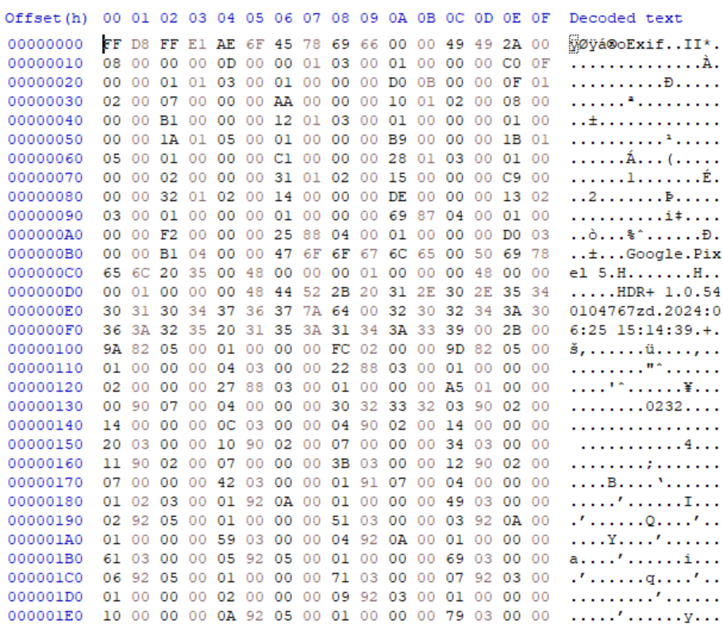
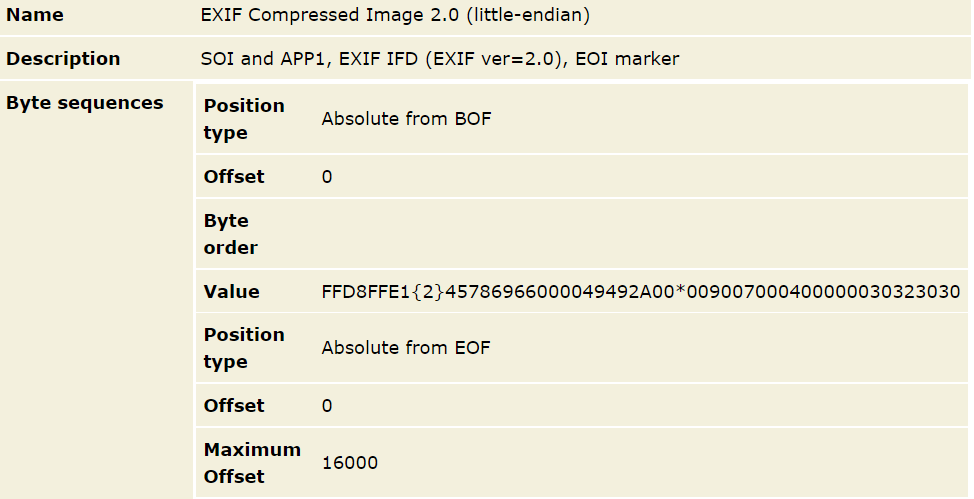
- Specifications are often used to describe file formats
- Specifications become standards
- External metadata can be used to identify a file format
- The internal (binary) structure can be used as well but we need to use a hex editor to do this
Content from Multi-part Assets
Last updated on 2026-08-18 | Edit this page
Estimated time: 0 minutes
Overview
Questions
- What are multi-part assets?
- How do they differ from individual files?
- How are they different from container files?
Objectives
- Introduce multi-part assets
- Demonstrate a gap that still exists in file format identification
Multi-part Assets
- Consists of multiple files
- Often co-located, i.e. in a single folder on a file system or across multiple folders
- Examples include Advanced Video Coding High Definition (AVCHD), Interoperable Master Format (IMF), some iWork versions.
- Could be distributed across web resources
- Examples include a web page with separate HTML, JS, CSS elements.
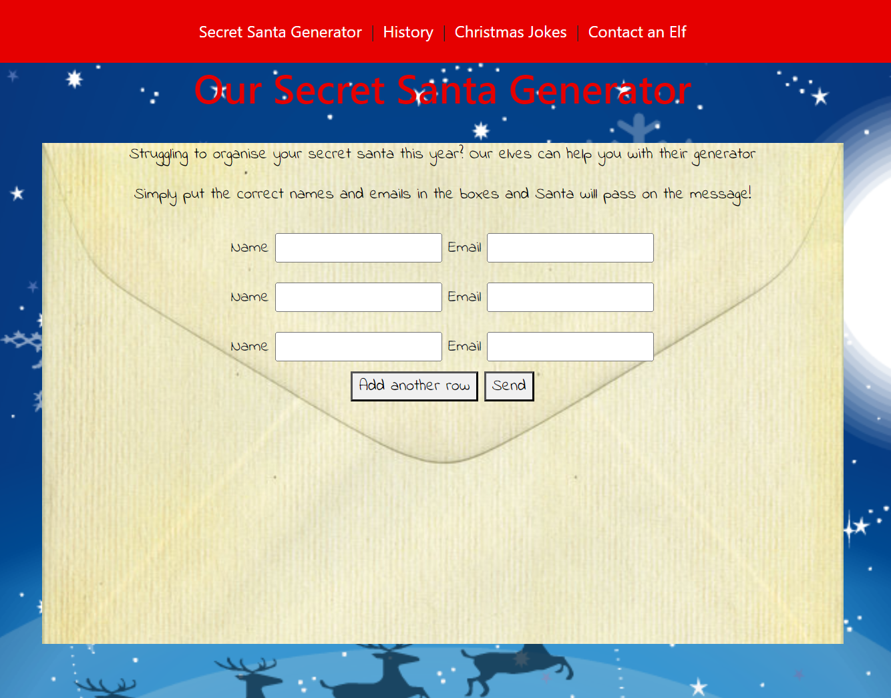
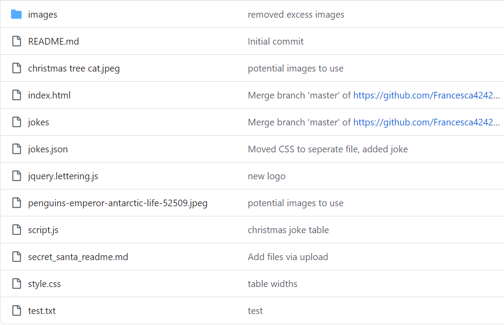
Is a group of files such as jpeg, css, JavaScript, html and more
A website displayed in a browser
Multi-part assets
Can you think of other multi-part assets? Are there any that you are working with in your organization?
- Multi-part assets are loose collections of digital files
- Multi-part assets are expected to have a shared context, e.g. directory in which they found and rendered from.
Content from Container file formats
Last updated on 2026-08-18 | Edit this page
Estimated time: 0 minutes
Overview
Questions
- What are container file formats?
- How do we identify candidates for container based identification?
- What are OLE2 and ZIP?
Objectives
- Understand what container formats are
- Understand their unique properties for more accurate identification
- Understand how to identify a container format
Container-based Formats
Consists of multiple items/subfiles, contained within a single containing file structure.
Within A/V, formats such as MP4 and MXF are also referred to as container formats, and they may contain distinct audio and video streams, subtitles and more. DROID does not deal with these at a container level, just binary identification (MediaInfo is your best friend!)*
Might have these two links up for folks to get an idea of how many Container based formats are out there. http://fileformats.archiveteam.org/wiki/Category:Microsoft_Compound_File http://fileformats.archiveteam.org/wiki/Category:ZIP_based_file_formats
Container-based Formats
Consists of multiple items/subfiles, contained within a single containing file structure.
Examples on the just solve it wiki:
OLE2:
ZIP:
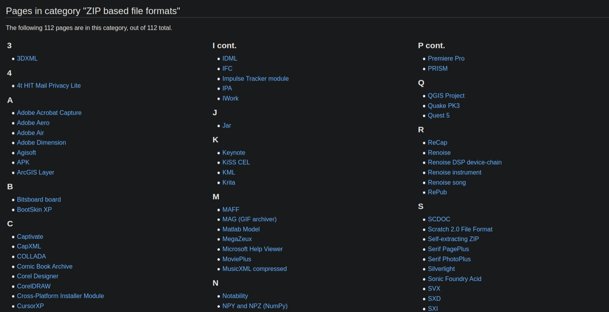
ZIP: 112 Pages
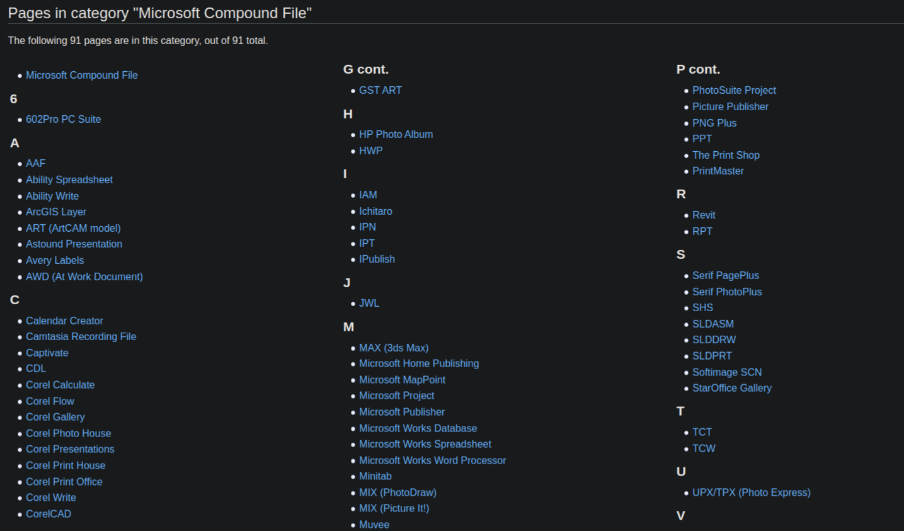
OLE2: 91 Pages
Like Matryoshka Dolls, but the Dolls are directory paths, filenames and file formats…
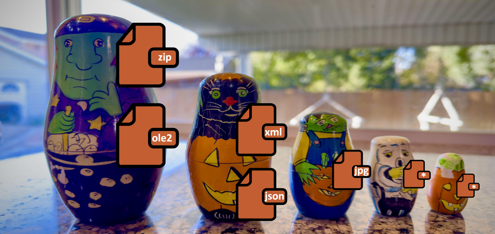
- Container format arer build on other file formats
- OLE2 and ZIP are the primary foundations of container formats although other containers exist such as GZip
- Container formats consist of many files/subfiles in a singe package
- Container formats can provide more accurate identification than standard signature identification
Content from Exploring Microsoft Word
Last updated on 2026-08-18 | Edit this page
Estimated time: 0 minutes
Overview
Questions
- What characteristics does Microsoft Word OOXML have?
- How does it differ from previous Word formats?
- How do we dissect the format and think about identifying it?
Objectives
- Introduce Microsoft Word OOXML
- Investigate its structure
- Begin to look into Microsoft style container formats for yourself
Microsoft Word DOCX Format
- Structurally follows the Office Open XML standard - ISO/IEC 29500, ECMA-376
- Is a Zip file, containing mostly XML files
- XML files define the structure of the document, along with any textual and formatting elements
- XML files also control the meta-structure, describing where other file elements can be found within the zip
- Embedded objects (such as images) are stored in full
- Can be unpacked or explored with a tool such as 7zip, or through Windows Explorer after changing the file extension to .zip
- May also contain a thumbnail image of the rendered document
The Microsoft Word DOCX Format
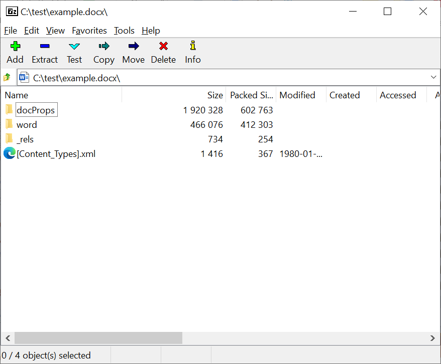
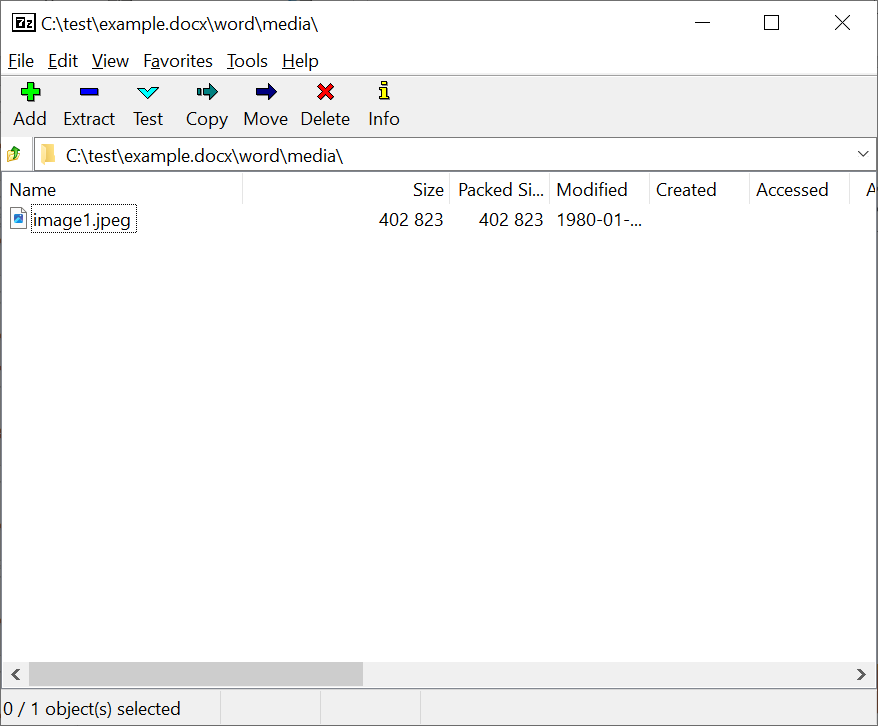
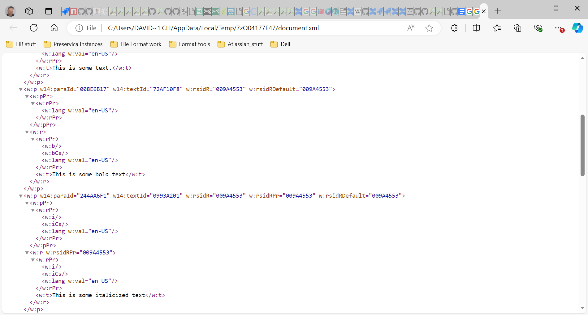
Exploring a Container Format
Explore a Word, Excel, or PowerPoint document and discuss what you see and any interesting findings with your peers.
The container can be accessed by using a tool such as 7-zip to unpack the contents, or by changing the file extension to .zip,*
- Dissect a Microsoft Word OOXML file
- Understand the purrpose of some of its contents
- Investigate other ZIP-based containers
Content from Binary Signatures Recap
Last updated on 2026-08-18 | Edit this page
Estimated time: 0 minutes
Overview
Questions
- What are binary signatures?
- How do we write a binary signature?
- What is PRONOM regular expression syntax?
Objectives
- Provide a refresher on standard PRONOM signature identification
- Look at the type of magic number we often work with when looking at non-container file formats
Binary Signature File Format Identification Recap
- Deals with internal bytecode - the ones and zeros that make up a digital file
- Identification based on pattern matching of hexadecimal values
- Ideally based on elements clearly defined by the format creator - ‘magic number’ sequences
- However, such sequences may not be specified so other elements may need to be used
- File format specifications really help. May not be readily available
- Sequences may need to be inferred based on observation, ideally from a representative and diverse set of known-good file instances
- Main tool used by a file format researcher is a Hex Editor
- Based on your pre-workshop feedback, we will look to deliver a workshop on this topic in the near future!
Identification based on specification example:
Signature: 5A5854617065211A01
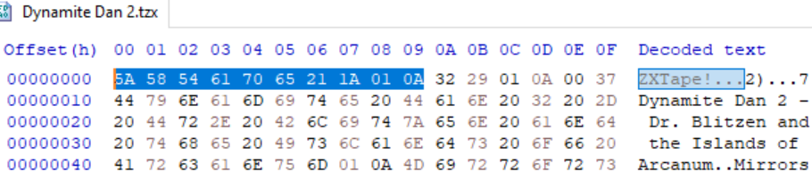
The text file and other formats
- Some files are completely unpredictable and have no official structure.
- For example a .txt file consists of whatever you choose to type in ASCII.
- Other examples of this may include some coding languages or files made up of strings of data.
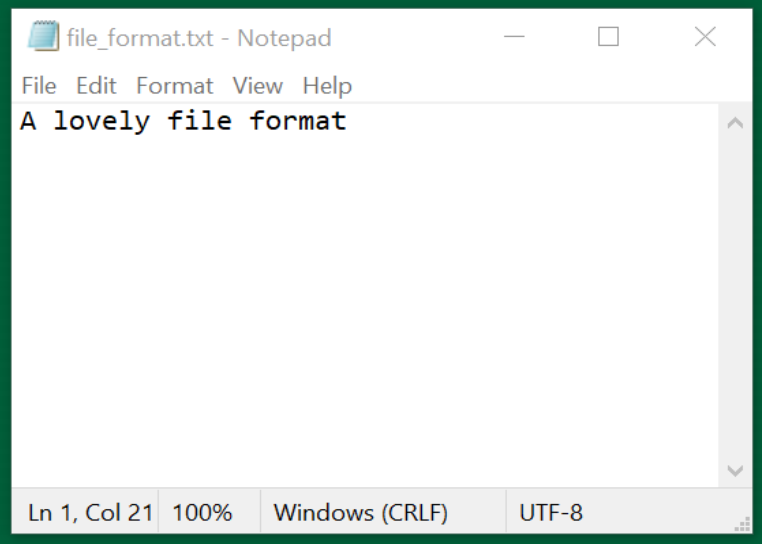
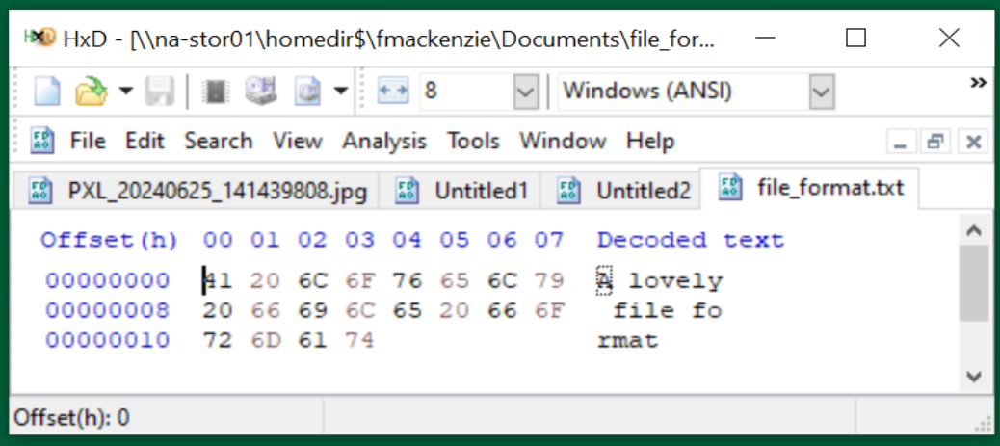
Task: Hex Editors
Look at the internal bytecode of any file. Do you notice any consistencies in the file? Any patterns in the head, body, and tail?
Use hex editor you have installed, or hexed.it as an online solution. :::::: caution Always be careful when uploading files to pages on the web. Hexed.it has been selected as a client hexadecimal browser meaning that all processing is done by the client and nothing is sent to the server. You can confirm its status by checking the tool’s user manual under “? Help” on the hexed.it website.
::::
- Binary signatures use PRONOM regular expression syntax
- Binary signatures query the linear bytestream of the digital file
- We use a hex editor to query digital objects
Content from Binary Identification in PRONOM
Last updated on 2026-08-18 | Edit this page
Estimated time: 0 minutes
Overview
Questions
- How we record file format signatures in PRONOM?
- What does a signature look like?
- How do we identify a ZIP file?
Objectives
- Understand the basic principles of a PRONOM file format signature?
- Understand a ZIP file’s relationship to PRONOM and container file identification?
Binary Signature File Format Identification
- A PRONOM file format entry can be associated with zero-to-many file format signatures. Matching any signatures will return a hit
- A File Format signature can be anchored to the beginning of the file (BOF), the end of the file (EOF), or at a variable (VAR) location within the file. It can also be offset to the BOF or EOF, either absolutely, or by a range
- Binary signatures in PRONOM are always expressed using hexadecimal notation
Binary Signature File Format Identification additional syntax
-
??: wildcard matching any pair of hexadecimal values (i.e. a single byte).
e.g.: 0x0A FF ?? FE would match 0x0A FF 6C FE or 0x0A FF 11 FE.
-
*: wildcard matching any number of bytes (0 or more).
e.g.: 0x0A FF * FE would match 0x0A FF 6C FE or 0x0A FF 6C 11 FE.
-
{n}: wildcard matching n bytes, where n is an integer.
e.g.: 0x1C 20 {2} 4E 12 would match 0x1C 20 FF 15 4E 12.
-
{m-n}: wildcard matching between m-n bytes inclusive, where m and n are integers or ‘*’.
e.g.: 0x03 {1-2} 4D would match 0x03 3C 4D or 0x03 3C 88 4D. e.g.: 0x03 {2-*} 4D would match 0x03 3C 88 4D or 0x03 3C 88 3F 4D.
Binary Signature File Format Identification additional syntax
-
(a|b): wildcard matching one from a list of values (e.g. a or b), where each value is a hexadecimal byte sequence of arbitrary length containing no wildcards.
e.g.: 0x0E (FF|FE) 17 would match 0x0E FF 17 or 0x0E FE 17.
-
\[a:b\]: wildcard matching any sequence of bytes which lies lexicographically between a and b, inclusive (where both a and b are byte sequences of the same length, containing no wildcards, and where a is less than b).
e.g. 0xFF \[09:0B\] FF would match 0xFF 09 FF, 0xFF 0A FF or 0xFF 0B FF.
-
\[\!a\]: wildcard matching any sequence of bytes other than a itself (where a is a byte sequence containing no wildcards).
e.g. 0xFF \[\!09\] FF would match 0xFF 0A FF, but not 0xFF 09 FF.
Binary Signature File Format Identification additional syntax
-
\[\!a:b\]: wildcard matching any sequence of bytes which does not lie lexicographically between a and b, inclusive (where a and b are both byte sequences of the same length, containing no wildcards, and where a is less than b)
e.g. 0xFF \[\!01:02\] FF would match 0xFF 00 FF and 0xFF 03 FF, but not 0xFF 01 FF or 0xFF 02 FF.
Binary Signature File Format Identification example - ZIP
| Name | ZIP Format Signature 1 | |
|---|---|---|
| Byte sequences | Position type | Absolute from BOF |
| Offset | 0 | |
| Maximum Offset | 4 | |
| Value | 504B0304 | |
| Position type | Absolute from EOF | |
| Offset | 0 | |
| Byte order | Little-endian | |
| Value | 504B01{43-65531}504B0506{18-65531} | |
| Name | ZIP Format Signature 2 | |
| Byte sequences | Position type | Absolute from BOF |
| Offset | 0 | |
| Maximum Offset | 0 | |
| Value | 504B05060000 |

- Records in PRONOM can have more than one signature associated with them due to the complexities of identification
- PRONOM uses a unique regular expression syntax
- We need to identify ZIP files using standard signature syntax and this becomes a trigger for container file identification
Content from A Brief XML Primer
Last updated on 2026-08-18 | Edit this page
Estimated time: 0 minutes
Overview
Questions
- What is Extensible Markup Language (XML)?
- How is XML used by PRONOM?
- How do container signatures utilize XML?
Objectives
- Gain a basic understanding of XML
- Understand the structural components of XML
- Recognize that container sygnatures are structured using XML
A (very brief) XML primer {#a-(very-brief)-xml-primer}
- XML = eXtensible Markup Language
- Consists of Elements, Attributes, and Data
- Usually starts with a Prolog:
- Indentation helps with readability, but is not mandatory and whitespace (tabs, carriage returns, spaces) are ignored by the XML parser
- Elements must have a closing tag
- Elements are hierarchical - they can have child elements
- Attribute values must be quoted (single/double)
XML
<ContainerSignatureMapping schemaVersion="1.0" signatureVersion="38">
<ExampleElement>Example data</ExampleElement>
</ContainerSignatureMapping>- XML has a basic structure that is required to be well-formed
- XML begins with an XML declaration
- XML elements bookend other information recorded in the format
- Container signatures are structured using XML’s hierarchical structure
Content from Container File Identification
Last updated on 2026-08-18 | Edit this page
Estimated time: 0 minutes
Overview
Questions
- What does a container signature file look like?
- What is the relationhip between contain signature XML and PRONOM?
- What are the important aspects of the container signature structure?
Objectives
- Learn about the fundamental structure of a container signature file
- Understand the three (?) distinct sections of the signature file
NB. the xml below needs to be prettified…
Exploring container signatures
Task: The Container Signature File
Open the latest container signature file.
In your web browser, or text editor of choice:
Directly:
https://cdn.nationalarchives.gov.uk/documents/container-signature-20240715.xml
Or via PRONOM > DROID Signature Files > 15 July 2024 (at the bottom of the page):
How DROID Identifies Container-based File Formats
- Initial identification of certain container formats acts as a Trigger for DROID to check for container identification matches
- DROID then checks the internal structure of these container format instances, seeking matching Paths to required subfiles (files or directories within the container)
- If a matching path is found, DROID then checks the InternalSignatures of the subfile(s), seeking matching identification Sequences
- All elements of a container signature must be present for it to return a hit
- A format (PUID) can have multiple container signatures, in which case matching against any will return a hit
- If no matching trigger identification is found, or no matching paths are found, or where declared no matching sequences are found, binary identification continues as normal
Container signatures in the PRONOM database
- PRONOM won’t show container signatures within the database. If a format is in the database usually there is a note on the page mentioning that it has a container signature attached as below.
- Container signatures are not entered into our database in the same way as binary signatures and can only be seen via the downloaded xml files.
- Container signatures are written manually in xml before being published. You can therefore see different stylistic decisions that may have been made within the xml.

Container Signature File Structure
Consists of three sections:
ContainerSignatures - the actual signature data that is used to identify files
FileFormatMappings - the relationship (or key) between formats in PRONOM proper and Container Signatures
TriggerPuids - the formats in PRONOM that, where initially identified, will prompt container signature processing and detection
Container Triggers
The identification of certain container formats acts as a trigger for DROID to check for container identification matches. These triggers are:
- fmt/111: OLE2 Compound Document Format
- fmt/189: Microsoft Office Open XML 2007 Onwards
- x-fmt/263: Zip Format
> NB: fmt/189 is a specific type of zip
If your file identifies as any of these then it may well be a candidate for a container signature!
Triggers are found in the ‘TriggerPuids’ section at the bottom of the Container Signature File:
File Format Mappings
The relationship (or key) between formats in PRONOM proper and Container Signatures, which includes SignatureID and PUID attributes.
- SignatureID maps to items in the ContainerSignatures section and is assigned manually by the PRONOM team
- PUID maps directly to a PRONOM identifier.
- Includes a comment line containing the format name and usually the type of container trigger
- A PUID can be mapped to multiple ContainerSignatures by SignatureID. In this case a match against any of the listed container signatures will return a match
Container Signature Structures - Overview
- At the top level, Container Signatures consist of an ID attribute which matches the File Format Mapping.
- The ContainerType attribute (either ZIP or OLE2) is informational and relates to the Trigger.
- The Description usually matches the format name, but may include additional information (e.g. ‘variant 2’).
- The Files element must exist and contains one or more File elements.
Container Signature Structures - Files
- File elements contain one to many Path elements
- Paths represent a filepath to a resource (directory or file) relative to the root of the container
- A Container Signature must minimally have one File & Path, but can have many
- A File can have zero-to-many BinarySignatures
- A Container Signature must match against all given Paths and BinarySignatures to return a match
Container Signature Structures - Sequences
- A Path can have zero-to-many InternalSignatures
- InternalSignatures represent a byte sequence found within a file specified by a Path
- An InternalSignature can be formed of many sub-Sequences
- As with binary signatures, InternalSignatures can be positioned relative to the BOF, EOF, or Variable within the file
- Sequences in a Container Signature can be expressed as hexadecimal, or ASCII where appropriate (usually standard western alphanumeric characters from the 7-bit ASCII range). If in doubt use hexadecimal!
- The value of InternalSignature ID is arbitrary, but in later versions we usually match them to the Container Signature ID
Container Signature Syntax
- Syntax for container signatures can differ from binary signature syntax
- The most obvious of these is the option to write in ASCII with inverted commas or in hexadecimal whereas binary signatures are only written in hexadecimal
- Binary signature syntax elements, such as wildcards and byte ranges cannot be applied in the same way - instead signatures are more similar to the post-processed versions found in the binary signature file
Container signature examples
Container Signature Example - fmt/412
XML
<ContainerSignature Id="1030" ContainerType="ZIP">
<Description>Microsoft Word OOXML</Description>
<Files>
<File>
**
<Path>[Content_Types].xml</Path>**
<BinarySignatures>
<InternalSignatureCollection>
**
<InternalSignature ID="302">**
<ByteSequence Reference="BOFoffset">
<SubSequence Position="1" SubSeqMinOffset="0" SubSeqMaxOffset="32768">
<Sequence>'ContentType="application/vnd.openxmlformats-officedocument.wordprocessingml.document.main+xml"'</Sequence>
</SubSequence>
</ByteSequence>
</InternalSignature>
</InternalSignatureCollection>
</BinarySignatures>
</File>
</Files>
</ContainerSignature>Container Signature Example - fmt/39
XML
<ContainerSignature Id="1000" ContainerType="OLE2">
<Description>Microsoft Word 6.0/95 OLE2</Description>
<Files>
<File>
<Path>WordDocument</Path>
</File>
<File>
<Path>CompObj</Path>
<BinarySignatures>
<InternalSignatureCollection>
<InternalSignature ID="306">
<ByteSequence Reference="BOFoffset">
<SubSequence Position="1" SubSeqMinOffset="40" SubSeqMaxOffset="1024">
<Sequence>10 00 00 00 'Word.Document.' ['6'-'7'] 00</Sequence>
</SubSequence>
</ByteSequence>
</InternalSignature>
</InternalSignatureCollection>
</BinarySignatures>
</File>
</Files>
</ContainerSignature>Container Signature Example - fmt/1196
Container Signature Example - fmt/1190
XML
<InternalSignature ID="28200">
<ByteSequence Reference="BOFoffset">
<SubSequence Position="0" SubSeqMinOffset="0" SubSeqMaxOffset="0">
<Sequence>3C 3F 78 6D 6C 20 76 65 72 73 69 6F 6E 3D 22 31 2E 30 22 20 3F 3E</Sequence>
</SubSequence>
</ByteSequence>
<ByteSequence Reference="BOFoffset">
<SubSequence Position="1" SubSeqMinOffset="23" SubSeqMaxOffset="50">
<Sequence>3C 73 77 63 20 78 6D 6C 6E 73 3D 22 68 74 74 70 3A 2F 2F 77 77 77 2E 61 64 6F 62 65 2E 63 6F 6D 2F 66 6C 61 73 68 2F 73 77 63 63 61 74 61 6C 6F 67 2F</Sequence>
</SubSequence>
</ByteSequence>
</InternalSignature>Container Signature Example - fmt/978
XML
<ContainerSignature Id="30020" ContainerType="OLE2">
<Description>3DS Max</Description>
<Files>
<File>
<Path>DocumentSummaryInformation</Path>
<BinarySignatures>
<InternalSignatureCollection>
<InternalSignature ID="30020">
<ByteSequence Reference="BOFoffset">
<SubSequence Position="1" SubSeqMinOffset="0" SubSeqMaxOffset="1024">
<Sequence>33 64 73 20 4D 61 78 20 56 65 72 73 69 6F 6E </Sequence>
</SubSequence>
</ByteSequence>
</InternalSignature>
</InternalSignatureCollection>
</BinarySignatures>
</File>
</Files>
</ContainerSignature>- Container signature XML is currently separate from the PRONOM database
- Container signatures are separated into three structural components
- Triggers define a mapping between container type and container signature
- A container signature is a combination of metadata, file path, and binary signature pattern
- Binary signatures are optional and container signatures can be created even if we only have a consistent file path to work on
Content from Creating a Container Signature
Last updated on 2026-08-18 | Edit this page
Estimated time: 0 minutes
Overview
Questions
- How do we apply the knowledge we have gleamed so far?
Objectives
- Create your first container signature file
- Load your signature file in DROID or Siegfried
- Identify questions that you may have of the process
Task: Creating and Testing Container Signatures
20 mins..
- Manually create your signatures using the template.
TODO: add the XML template to the resources section of the workshop
FFDev.info https://ffdev.info/ provides a form for ease of creation of standard and container signature files.
- To use new signatures they will need to be added to the right folders in the droid config:
Binary and Container signatures are contained in separate folder within the .droid6 folder. This folder is likely hidden at the root of your user folder. Signatures must have a unique signature version number at the beginning of the XML so as not to conflict with other signature files. These can be manually moved into these folders or regular signature loaded within DROID.
If you are using Siegfried, you can use the Roy tool to build a new signature using your new signatures.
Check out the “try-it” section of ffdev.info to try this signature file in the browser with your test files.
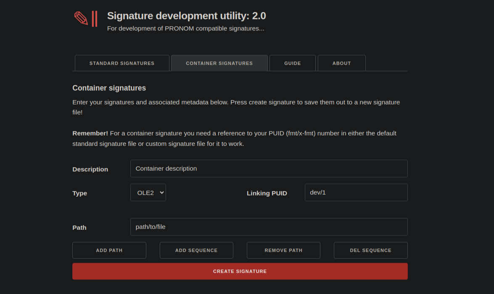
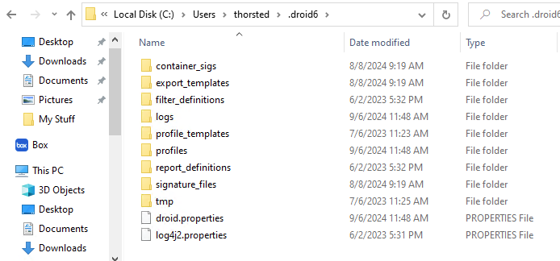
- You can use an XML template or ffdev.info to create a signature file
- Signature files exist in specific locations on your hard disk
- ffdev.info allows you to test your files in the web-browser
Content from Finding File Format Samples
Last updated on 2026-08-18 | Edit this page
Estimated time: 0 minutes
Overview
Questions
- Why do we need file format samples?
- How do you find file format samples?
- What existing resources are there for finding file formrat samples?
Objectives
- Learn why other file format samples are important
- Learn about existing resources and think about alternatives
Finding Format Examples
The more Samples you can find, the more precise the signatures can be.
File format examples can can found on:
- Search Engines,
e.g.
<search term> filetype:pdf - Just solve it: File Formats Wiki
- Internet Archive
- eLearning Sites
- Compiled Corpuses.
- Make your own!
Tyler’s format finding guide! https://github.com/thorsted/fileformat
Specifications for file formats don’t always exist or are accessible. Having many samples of a file format can help distinguish which parts of the format have consistent patterns, help you determine version bytes, find outliers or other variants, and provide data to test other signatures against in the future. Making your own samples is helpful in knowing versioning and other properties of the file format.
Examples are important for looking for deviations in file format specifications. They may also be easier to share with the public and the PRONOM team if your own examples are embargoed in any way.
Where might you look for file formats above and beyond those in this lesson?
- There are lots of sources of example files
- We have guides that may help
- Share your own thoughts with the community and help us to develop these resources
Content from Testing File Format Signatures
Last updated on 2026-08-18 | Edit this page
Estimated time: 0 minutes
Overview
Questions
- What other methods do we have to test file format signatures?
- What are skeleton files?
- Where do we get them from?
- What testing properties do they have?
Objectives
- Understand what false-positives are
- Learn the pupose of skeleton files
- Learn where to access them and how to use them
Testing signatures
We want to identify false-positives and collisions.
- False-positives are files that are identifying incorrectly using the signature.
- False-positives are resolved through careful testing of signatures against existing patterns using tools like the skeleton suite (below).
- Collisions are a subset because they might occur because they are a subset of a file format, e.g. SVG might collide with XML
- Collisions are resolved through a directive in PRONOM to give piriority of one format over the other. The ideal - one format identificaiton per file, i.e. no multiple identification.
Skeleton suite
The skeleton suite can help us to do this.
The skeleton suite is …
info box:
Builder: Current Skeletons, Maintained by Richard Lehane
- Updated when a new PRONOM is released
- Contains standard and container skeleton samples.
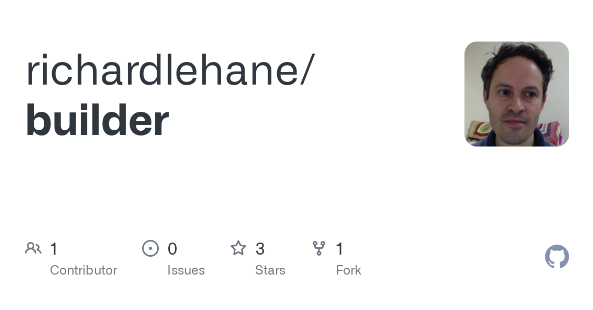
info box:
https://github.com/exponential-decay/skeleton-test-suite-generator
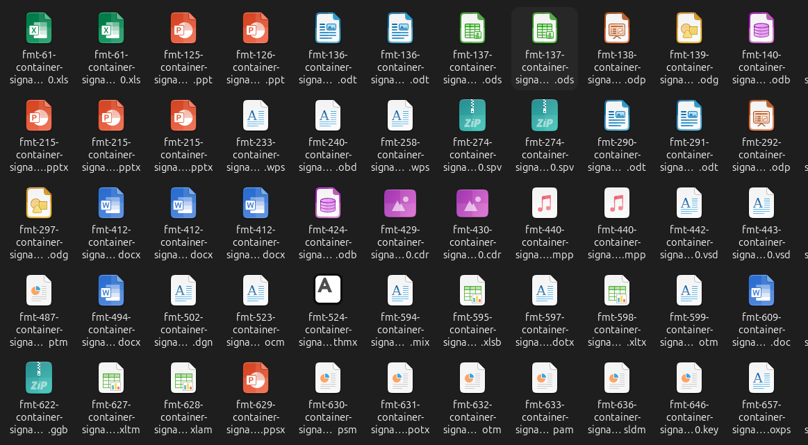
- False positives happen when a signature matches other records in PRONOM
- Sometimes a signature needs to be improved or a priority set for it
- Skeleton files were developed by Ross Spencer
- Richard Lehane builds these files each new PRONOM release and makes them available via Builder
- They are used in Siegfried and PRONOM workflows to identify DROID regressions and newly introduced multiple identifications or false positives
Content from Q&A
Last updated on 2026-08-18 | Edit this page
Estimated time: 15 minutes
Overview
Questions
- What questions do you still have?
Objectives
- Look at questions that came up during the show and tell.
- Uncover any new questions.
- Know how to potentially find answers in the future.
Questions
- What questions do you have?
- What formats might you go away and work on?
- Container signatures are not too disimilar from standard file format signatures.
- They can provide more accurate identification of certain file types.
- Like standard signatures they might seem scary at first, but you can do it!
- Look up PRONOM’s resources and regular meetups.
- There’s help out there.
- And keep in touch!
Content from Wrapping Up
Last updated on 2026-08-18 | Edit this page
Estimated time: 0 minutes
Overview
Questions
- What are some more resources you can access?
- How can you keep in touch?
Objectives
- Provide additional materials for you to access
- Let you know how you can keep in touch
Final Topics
Contact us
Reach out in-person by email, or via one of our groups and community resources.
- Email: pronom@nationalarchives.gov.uk
- Google Groups: PRONOM - Google Groups
- GitHub- https://github.com/digital-preservation/PRONOM_Research
And our bi-weekly PRONOM Open Drop-In!
Resources
- The main PRONOM website can be found here: www.nationalarchives.gov.uk/PRONOM.
- Ross Spencer’s signature development utility for both binary and container signatures can be found here.
- A list of blogs, presentations, and other resources to assist with PRONOM research and file format signature development can be found here.
- If you would like help or advice on conducting your research, crafting your submission, creating a signature, or if you’re having difficulty finding samples, please create a conversation thread on our Google Group.
- Here is the full list of everything in PRONOM as of the v108 release on 5 September 2022. From here you can see which formats don’t currently have MIME/Media types, lists of associated extensions, deprecated formats and formats that have signatures (including container signatures).
- Here is a list of PUIDs that currently lack signatures. Can you help sourcing example files and suggesting potential identification signatures?
- Here is a list of PUIDs that currently only have an ‘outline’ description. Can you help us with some suggestions for PRONOM descriptive text entry? Descriptions should be objective descriptions of what the format does and can include information about its originating software and so should not contain qualitative information, such as ‘…is the best format for…’.
- Here is a list of files which we are looking for samples of, or information about. Can you help by providing some, or point us in the direction of where we can find them?
PRONOM starter pack
Get started with the PRONOM starter pack!
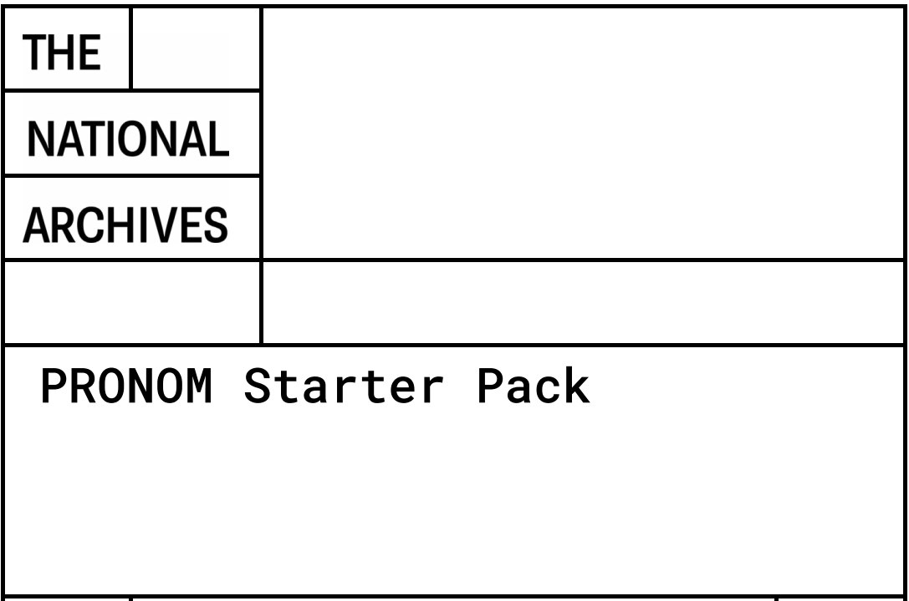
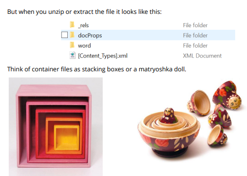
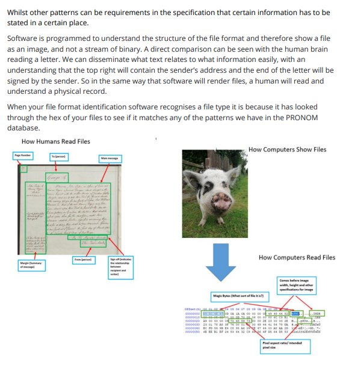
Useful links
https://linktr.ee/pronom.whats.in.the.box
- Next time you have an unidentified file format:
- open it up in a hex editor, and,
- take a look.
- Write a new signature and submit it to PRONOM.
- Share your knowledge with colleagues and support the next generation of file format researchers!!!
- You can even use this template and build on it to tailor yours and your colleagues’ experiences.
Survey
Help us to improve this content and future tutorials and workshops.
- It can be challenging, but take your time, explore, and enjoy!
- Every signature helps!
- There’s help out there
- Keep in touch!